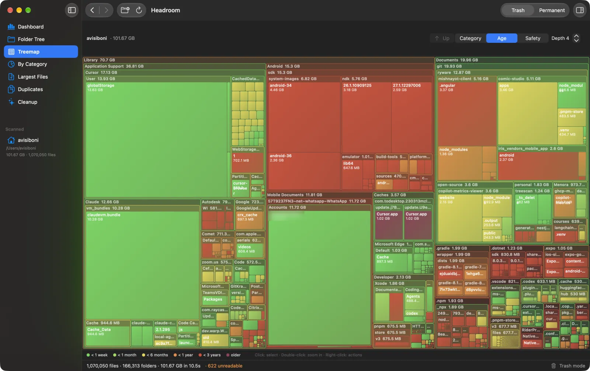
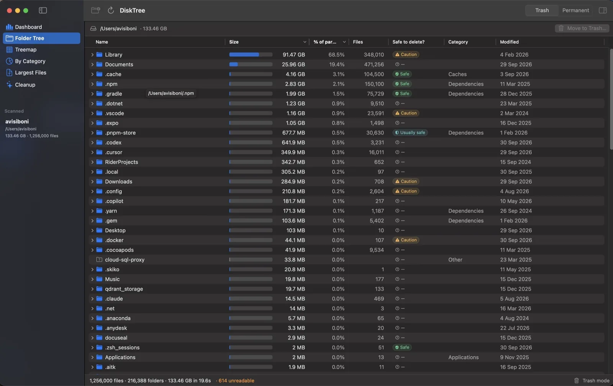
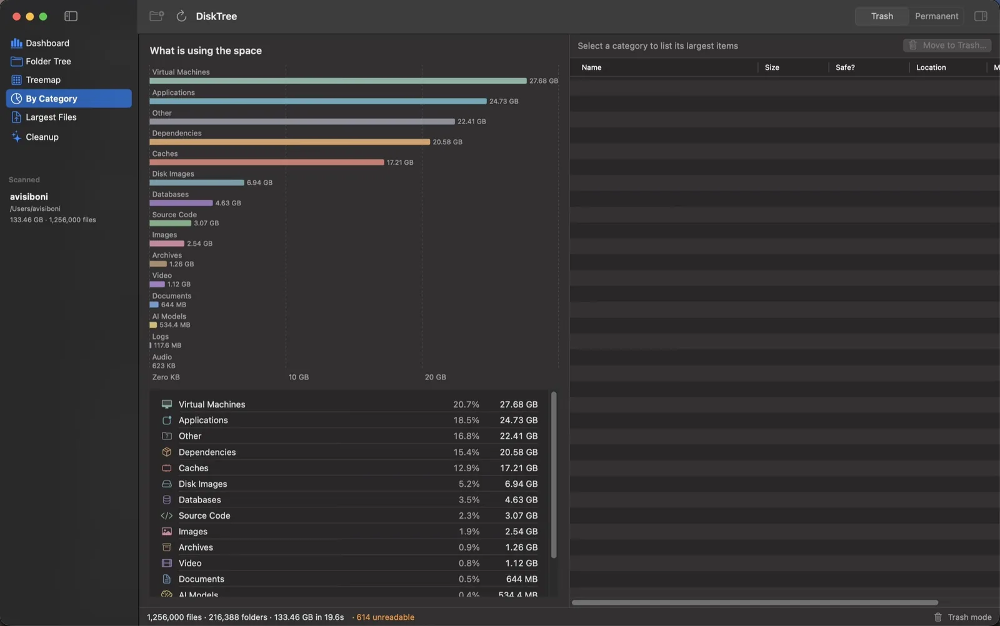
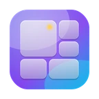

Interactive treemap
Every rectangle is a file or folder, sized by what it takes on disk. Color by category, age or safety. Double-click to zoom.
Free and open source for macOS 14 and up
A free, native Mac disk space analyzer and duplicate finder that tells you what is safe to delete.
Hover for the verdict. Click a folder to zoom in.
Scan a folder or the whole disk, understand where the space went, and remove only what is safe to remove.

Every rectangle is a file or folder, sized by what it takes on disk. Color by category, age or safety. Double-click to zoom.
Built on getattrlistbulk, the fastest directory read macOS offers, fanned out across every core.
A virtualized outline with sortable sizes, share of parent and a safety column. Folders sort only when shown.
Byte-for-byte copies, ranked by the space one copy gives back. Four passes, so a 40 GB disk image is never read in full to prove it differs. See how it works
DerivedData, node_modules, npm, pnpm, pip, Gradle and Cargo caches, build output and logs, found and sized for review.
Everything runs on your Mac. No account, no analytics, no cloud. The code is public.
Five files that look alike. Four passes, each cheaper than reading a file. Only byte-for-byte copies survive.
Scroll to run the passes.
Bytes read: 0

Every recognized item gets a plain-language verdict and a note on what deleting it affects.
Regenerable data such as caches, build output and package stores.
Rebuilt on demand, may take a while or a re-download to recreate.
Settings or user data. Read the note in the Inspector before removing.
Keychains, Mail, Photos library, the system itself. Headroom will tell you so.

macOS 14 Sonoma or newer, Apple silicon and Intel. Prefer to build it yourself? git clone and run ./build.sh run.

Short answers. The README has the long ones.
No. There is no Pro tier, subscription, lifetime purchase, trial or in-app purchase. Every feature is free and unlocked for everyone: the treemap, one-click cleanup, developer deep scan, safety hints, Trash-first deletion and fast permanent deletion.
Yes, this one. Headroom is a free, open-source Mac disk space analyzer and cleaner that never locks cleanup or developer scans behind a paywall, and never asks for an account or payment.
Yes. Headroom was called DiskTree until version 1.0 (October 2026): same app, same settings, same bundle id, so updates install in place. It is not affiliated with the paid DiskTree app at disktree.org or with any other app named Headroom. The code is at github.com/Ryware/Headroom.
Files are grouped by size, then by a hash of their first 64 KB, then by samples from the middle and end, then by a full SHA-256 of the whole file. Only files that still match after the last step are listed, so every group is byte-for-byte identical. Files under 1 MB and files inside app bundles are skipped, and Headroom always keeps one copy of each file unless you turn that guard off.
Headroom is a free, open-source, native macOS app that shows what is using space on your Mac. It scans a folder or disk, visualizes the result as a folder tree, treemap and category charts, explains whether items are safe to delete and helps you clean them up.
Yes. It is MIT-licensed with no ads, subscriptions, accounts, in-app purchases or analytics. It was made to be enjoyed.
Open Headroom, choose Home or Startup Disk and wait for the scan. The dashboard shows free and used space and the biggest categories, the folder tree lists folders by size, and the treemap draws every file as a rectangle sized by how much space it uses.
Usually yes, because they are regenerable: node_modules can be reinstalled, Xcode DerivedData is rebuilt on the next build and caches are recreated on demand. Headroom labels recognized items Safe, Usually safe, Caution or Never and explains the effect. Keep Trash mode on if you want to be able to undo.
Trash mode moves items to the macOS Trash so you can restore them until you empty it. Permanent mode removes them immediately with a fast parallel engine like rimraf and cannot be undone.
It uses getattrlistbulk(2) and scans directories in parallel across all cores. A home folder with about 1.26 million files and 216,000 folders scanned in roughly 20 seconds.
No. Scanning and analysis happen entirely on your Mac. There is no account system, analytics SDK or cloud service in the app. This website uses Google Analytics to count visits and downloads; the app itself sends nothing.
Headroom is a free, native Mac app in the same spirit: a fast scan, a sortable size tree and a treemap, plus safety explanations and one-click developer cleanup.
Headroom is a free, open-source option if you want a DaisyDisk-style visual map of your disk without paying. DaisyDisk is a paid app with a sunburst map; Headroom uses a treemap and a sortable folder tree, and adds a duplicate finder, safety explanations and developer cleanup.
Both are open source and both draw a treemap of your disk. GrandPerspective focuses on the treemap view. Headroom adds a sortable folder tree, category breakdown, duplicate finder, safety explanations for what you are about to delete, one-click developer cleanup and a menu bar monitor.
For finding and freeing disk space, yes. Headroom covers disk analysis, large files, duplicates and cache and developer cleanup for free, with no subscription. It is not a full maintenance suite: it has no malware scanner, app uninstaller or performance tools.
macOS 14 Sonoma or newer on Apple silicon or Intel. Full Disk Access is only needed for protected locations such as Mail, Messages and Safari data.

Free, open source, every feature included.